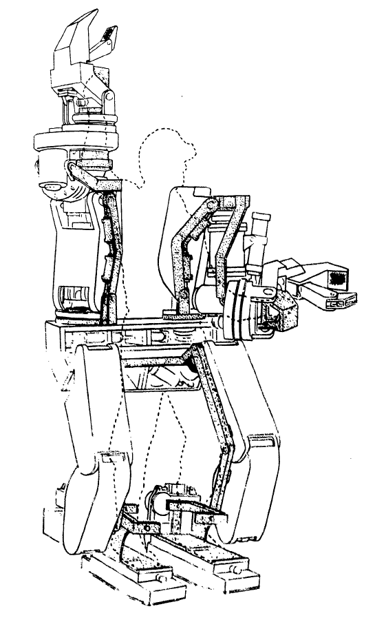

웨어러블 로봇이란?
웨어러블 로봇(Wearable Robot)은 인간의 신체에 착용할 수 있도록 설계된 로봇 기술을 말합니다.
이 기술은 인간의 신체 능력을 보완하거나 확장하는 데 목적을 두고 있으며, 보통 외골격 형태로 제작됩니다.
웨어러블 로봇은 사용자의 움직임을 지원하거나 향상시키기 위해 인간의 근육 작용을 모방하거나 보조하는 기능을 합니다.
| 응용 분야 | 내용 |
|---|---|
| 1.재활치료 | 사고나 질병으로 인해 신체적 기능이 손상된 사람들을 위한 재활 치료에 사용됩니다. 웨어러블 로봇은 손상된 신체 부위의 기능을 회복하도록 돕거나, 특정 운동을 수행하는 데 필요한 근육을 강화하는 데 도움을 줍니다. |
| 2.보조 기구 | 노약자나 신체적 약점을 가진 사람들이 일상생활을 보다 쉽게 수행할 수 있도록 돕습니다. 예를 들어, 걷기 어려움을 겪는 사람들을 위한 보행 보조 장치 등이 이에 해당합니다. |
| 3.향상된 물리적 능력 | 특정 작업을 수행하는 데 필요한 인간의 물리적 능력을 향상시키기 위해 사용됩니다. 예를 들어, 중량물을 드는 작업에서 노동자의 힘을 증강시켜주는 외골격 로봇이 이에 해당합니다.br |
| 4.군사 및 산업 응용 | 군사적 목적으로 병사의 전투 능력을 향상시키거나, 산업 현장에서 작업자의 안전을 보장하고 생산성을 높이는 데 사용됩니다. 웨어러블 로봇의 발전은 인간의 신체적 한계를 극복하고, 장애를 가진 사람들의 삶의 질을 향상시키며, 다양한 작업 환경에서의 안전과 효율성을 증대시키는 데 큰 기여를 하고 있습니다. 이 기술은 로봇공학, 인체공학, 인공지능, 센서 기술 등 여러 분야의 발전과 밀접하게 연관되어 있습니다. |
시초: 하디맨
하디맨(Hardiman)은 최초의 웨어러블 로봇 중 하나로, 1960년대에 미국의 제너럴 일렉트릭(General Electric, GE)이 개발한 외골격 로봇입니다.
이 프로젝트의 주된 목표는 사용자가 무거운 물체를 쉽게 들고 움직일 수 있도록 하는 것이었습니다.
하디맨은 인간의 동작을 모방하여, 사용자가 로봇을 착용하고 있을 때 실제보다 훨씬 더 큰 힘을 발휘할 수 있도록 설계되었습니다.
| 주요 특징 및 한계 | |
|---|---|
| 외골격 디자인 | 하디맨은 전신을 감싸는 외골격 구조로 되어 있으며, 여러 관절과 모터가 인간의 움직임을 모방하도록 설계되었습니다. |
| 중량과 크기 | 하디맨은 약 680kg(1500파운드)의 무게로, 매우 무겁고 큰 편이었습니다. 이는 로봇의 이동성과 사용성에 큰 제약을 주었습니다. |
| 힘 증강 | 이 로봇은 사용자가 최대 680kg(1500파운드)까지의 물체를 들 수 있도록 설계되었지만, 실제로는 안전 문제와 기술적 한계로 인해 이러한 성능을 완전히 실현하지 못했습니다. |
| 기술적 한계와 안전 문제 | 하디맨은 복잡한 제어 시스템과 무거운 무게로 인해 사용자가 조작하기 어렵고, 또한 과도한 힘으로 인해 사용자에게 위험을 초래할 가능성이 있어 실제 사용에는 적합하지 않았습니다. |